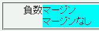

マージンのプロパティに負の値を指定すること（自身のボックスを親要素のボックスからはみ出させるなど）ができない。
<div style="margin-left:4em; background:aqua;"> <div style="margin-left:-2em;">負数マージン</div> <div>マージンなし</div> </div>
子要素のマージンを負の値にすることで、親要素のマージン領域に内容物が置かれます。
Moz1.4.1での表示（標準モード）
CSS2では負数マージンについては実装上、値に制限ができる可能性があると定められているので、指定値どおりのマージンが設置されないことは勧告違反ではありません。
ただし、ここで挙げている不具合は過去のバージョンのMozillaでは反映されていたスタイル指定が効かなくなった（後のバージョンのMozillaでは反映されている）という症状のようです。
【Mozilla(Gecko/20030718、和ジラ1.4のビルド)】
親要素(例えばbody)にmarginやpaddingで余白をつくり(例 margin-left:4em)、
子要素(例えばh1)でマイナスのマージン(例 margin-left:-1em)を指定しても反映されない。
既出でしたらすみません。
うちのMozilla 1.5では再現しないんだけど、それは和ジラビルドだけの問題かな。
ちなみに、マージンに負の値も設定可能だが、実装上制限があるかもしれない
と仕様書にあるので、負のマージンを指定して効かなくてもバグという訳ではない。
テストしたHTMLとCSSは以下。
**** hoge.html ****
<!DOCTYPE html PUBLIC "-//W3C//DTD HTML 4.01//EN" "http://www.w3.org/TR/html4/strict.dtd">
<html lang="ja">
<head>
<meta http-equiv="content-type" content="text/html; charset=shift_jis">
<title>てすと</title>
<link rel="stylesheet" href="hoge.css" type="text/css">
</head>
<body>
<h1 class="negative-margin">てすと</h1>
<h1>てすと</h1>
</body>
</html>
**** hoge.css ****
body { margin-left: 4em; }
h1 { background-color: red; }
h1.negative-margin { margin-left: -1em; }
作っていただいたHTMLとCSSも、見事に和ジラ1.4のみ、負のマージンが反映されませんでした。
恐らくは和ジラビルドだけではなく、Mozilla1.4全般で再現されるのだと推測しているのですが（確認は出来ておりません）。
ちなみに1.5では当方でも再現されませんでした。記し忘れてしまいすみません。